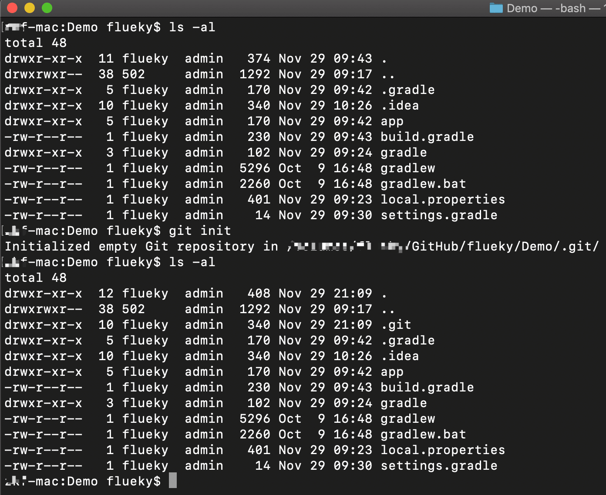
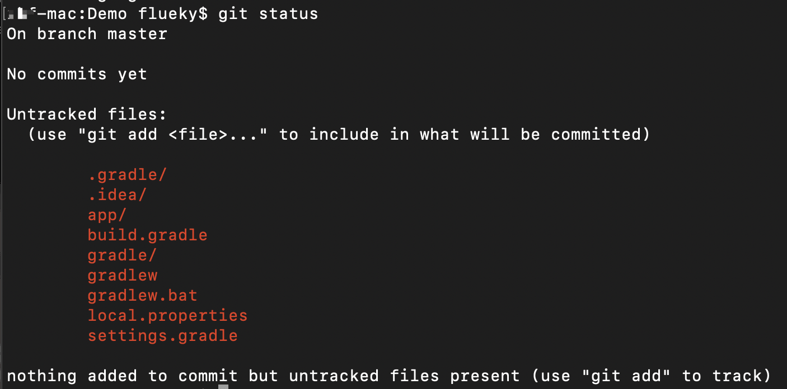
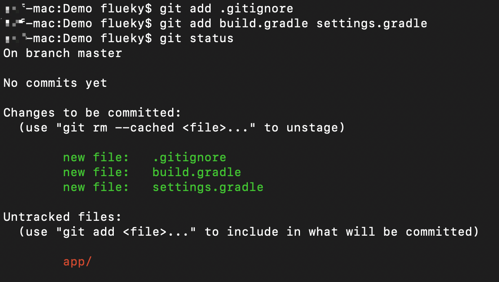
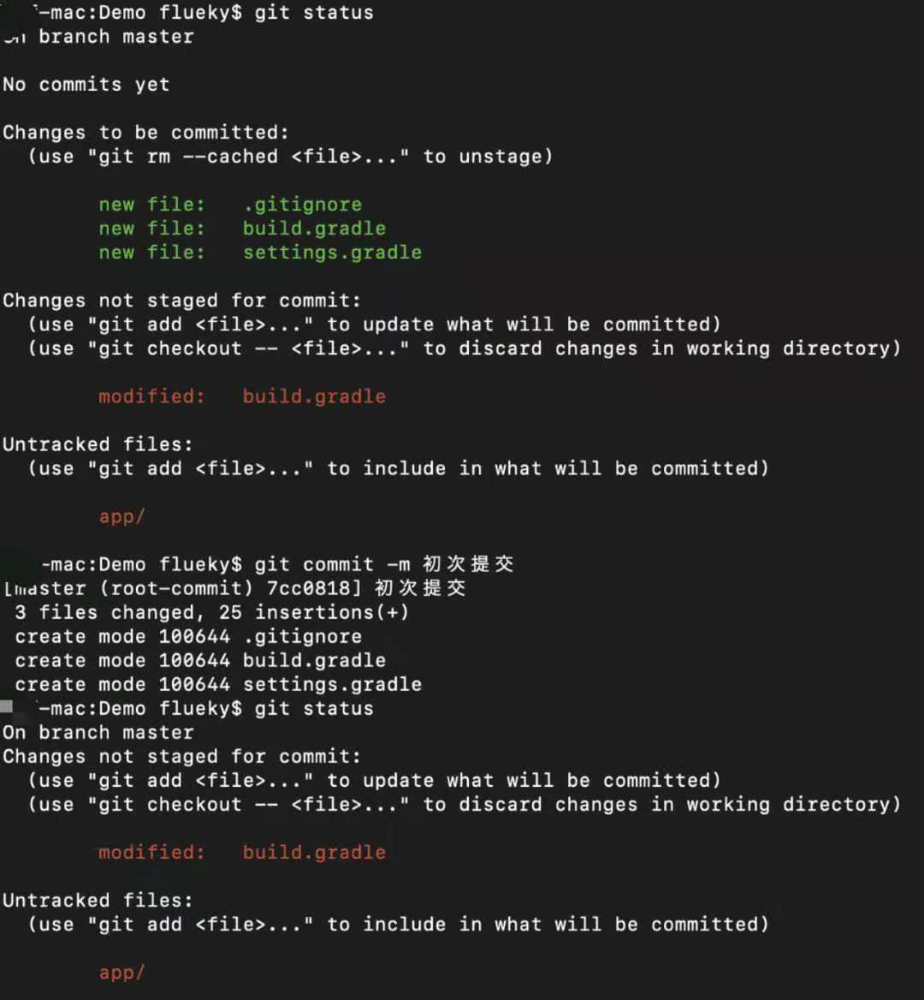
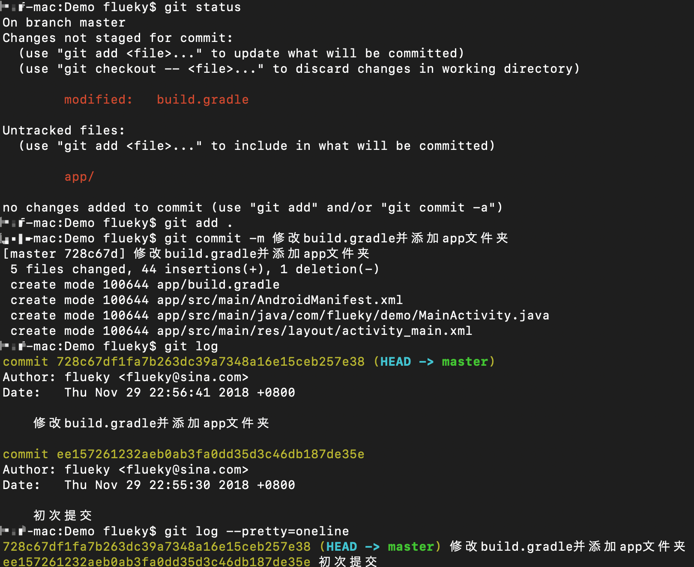
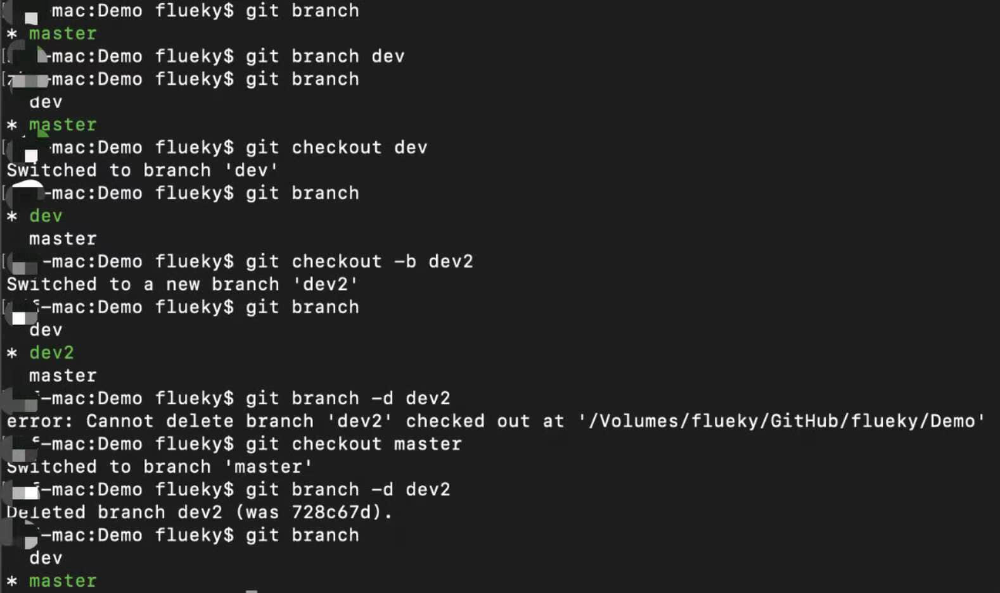
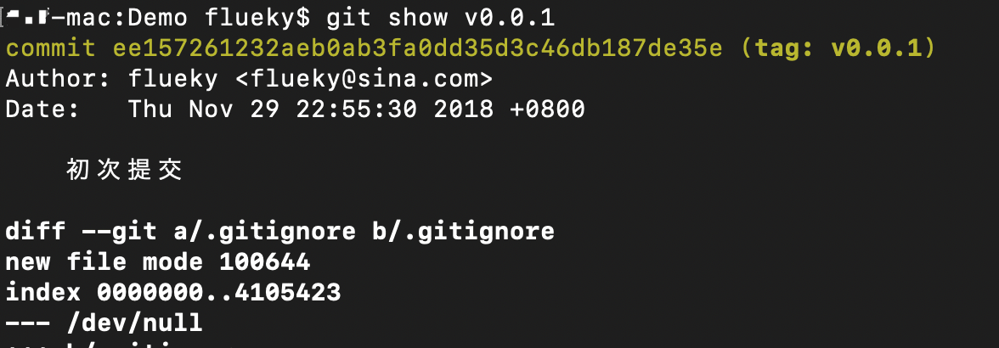
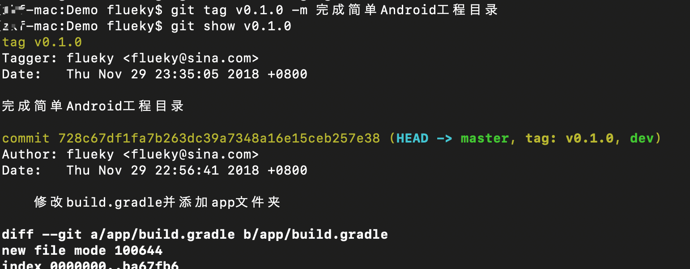

<!DOCTYPE html><html lang="en" data-theme="light"><head><meta charset="UTF-8"><meta http-equiv="X-UA-Compatible" content="IE=edge"><meta name="viewport" content="width=device-width, initial-scale=1.0,viewport-fit=cover"><title>Git常用命令 | Flueky 技术小站</title><meta name="author" content="Flueky Zuo"><meta name="copyright" content="Flueky Zuo"><meta name="format-detection" content="telephone=no"><meta name="theme-color" content="#ffffff"><meta name="description" content="init毫无疑问，这是学习git使用的第一个命令。在本地初始化git仓库。 12cd Demogit init  表示切换到Demo目录并在该目录初始化git仓库。会生成.git文件夹。   如图，是一个Android初始工程目录，创建git仓库后多出.git文件夹。 status查看仓库中文件状态。 1git status    图中表示全部文件均未添加至仓库，无需要提交至仓库文件。 有些不需要">
<meta property="og:type" content="article">
<meta property="og:title" content="Git常用命令">
<meta property="og:url" content="https://flueky.github.io/002/index.html">
<meta property="og:site_name" content="Flueky 技术小站">
<meta property="og:description" content="init毫无疑问，这是学习git使用的第一个命令。在本地初始化git仓库。 12cd Demogit init  表示切换到Demo目录并在该目录初始化git仓库。会生成.git文件夹。   如图，是一个Android初始工程目录，创建git仓库后多出.git文件夹。 status查看仓库中文件状态。 1git status    图中表示全部文件均未添加至仓库，无需要提交至仓库文件。 有些不需要">
<meta property="og:locale" content="en_US">
<meta property="og:image" content="https://i.loli.net/2021/02/24/5O1day2nriDzjSu.png">
<meta property="article:published_time" content="2018-11-30T01:08:04.000Z">
<meta property="article:modified_time" content="2024-09-08T10:33:04.548Z">
<meta property="article:author" content="Flueky Zuo">
<meta property="article:tag" content="Git">
<meta name="twitter:card" content="summary">
<meta name="twitter:image" content="https://i.loli.net/2021/02/24/5O1day2nriDzjSu.png"><link rel="shortcut icon" href="/img/favicon.png"><link rel="canonical" href="https://flueky.github.io/002/index.html"><link rel="preconnect" href="//cdn.jsdelivr.net"/><link rel="preconnect" href="//busuanzi.ibruce.info"/><link rel="stylesheet" href="/css/index.css?v=4.13.0"><link rel="stylesheet" href="https://cdn.jsdelivr.net/npm/@fortawesome/fontawesome-free@6.5.1/css/all.min.css"><link rel="stylesheet" href="https://cdn.jsdelivr.net/npm/@fancyapps/ui@5.0.33/dist/fancybox/fancybox.min.css" media="print" onload="this.media='all'"><script>const GLOBAL_CONFIG = {
  root: '/',
  algolia: undefined,
  localSearch: undefined,
  translate: undefined,
  noticeOutdate: undefined,
  highlight: {"plugin":"highlight.js","highlightCopy":true,"highlightLang":true,"highlightHeightLimit":false},
  copy: {
    success: 'Copy Successful',
    error: 'Copy Error',
    noSupport: 'Browser Not Supported'
  },
  relativeDate: {
    homepage: false,
    post: false
  },
  runtime: '',
  dateSuffix: {
    just: 'Just now',
    min: 'minutes ago',
    hour: 'hours ago',
    day: 'days ago',
    month: 'months ago'
  },
  copyright: undefined,
  lightbox: 'fancybox',
  Snackbar: undefined,
  infinitegrid: {
    js: 'https://cdn.jsdelivr.net/npm/@egjs/infinitegrid@4.11.1/dist/infinitegrid.min.js',
    buttonText: 'Load More'
  },
  isPhotoFigcaption: false,
  islazyload: false,
  isAnchor: false,
  percent: {
    toc: true,
    rightside: false,
  },
  autoDarkmode: false
}</script><script id="config-diff">var GLOBAL_CONFIG_SITE = {
  title: 'Git常用命令',
  isPost: true,
  isHome: false,
  isHighlightShrink: false,
  isToc: true,
  postUpdate: '2024-09-08 18:33:04'
}</script><script>(win=>{
      win.saveToLocal = {
        set: (key, value, ttl) => {
          if (ttl === 0) return
          const now = Date.now()
          const expiry = now + ttl * 86400000
          const item = {
            value,
            expiry
          }
          localStorage.setItem(key, JSON.stringify(item))
        },
      
        get: key => {
          const itemStr = localStorage.getItem(key)
      
          if (!itemStr) {
            return undefined
          }
          const item = JSON.parse(itemStr)
          const now = Date.now()
      
          if (now > item.expiry) {
            localStorage.removeItem(key)
            return undefined
          }
          return item.value
        }
      }
    
      win.getScript = (url, attr = {}) => new Promise((resolve, reject) => {
        const script = document.createElement('script')
        script.src = url
        script.async = true
        script.onerror = reject
        script.onload = script.onreadystatechange = function() {
          const loadState = this.readyState
          if (loadState && loadState !== 'loaded' && loadState !== 'complete') return
          script.onload = script.onreadystatechange = null
          resolve()
        }

        Object.keys(attr).forEach(key => {
          script.setAttribute(key, attr[key])
        })

        document.head.appendChild(script)
      })
    
      win.getCSS = (url, id = false) => new Promise((resolve, reject) => {
        const link = document.createElement('link')
        link.rel = 'stylesheet'
        link.href = url
        if (id) link.id = id
        link.onerror = reject
        link.onload = link.onreadystatechange = function() {
          const loadState = this.readyState
          if (loadState && loadState !== 'loaded' && loadState !== 'complete') return
          link.onload = link.onreadystatechange = null
          resolve()
        }
        document.head.appendChild(link)
      })
    
      win.activateDarkMode = () => {
        document.documentElement.setAttribute('data-theme', 'dark')
        if (document.querySelector('meta[name="theme-color"]') !== null) {
          document.querySelector('meta[name="theme-color"]').setAttribute('content', '#0d0d0d')
        }
      }
      win.activateLightMode = () => {
        document.documentElement.setAttribute('data-theme', 'light')
        if (document.querySelector('meta[name="theme-color"]') !== null) {
          document.querySelector('meta[name="theme-color"]').setAttribute('content', '#ffffff')
        }
      }
      const t = saveToLocal.get('theme')
    
        if (t === 'dark') activateDarkMode()
        else if (t === 'light') activateLightMode()
      
      const asideStatus = saveToLocal.get('aside-status')
      if (asideStatus !== undefined) {
        if (asideStatus === 'hide') {
          document.documentElement.classList.add('hide-aside')
        } else {
          document.documentElement.classList.remove('hide-aside')
        }
      }
    
      const detectApple = () => {
        if(/iPad|iPhone|iPod|Macintosh/.test(navigator.userAgent)){
          document.documentElement.classList.add('apple')
        }
      }
      detectApple()
    })(window)</script><meta name="generator" content="Hexo 7.3.0"></head><body><div id="sidebar"><div id="menu-mask"></div><div id="sidebar-menus"><div class="avatar-img is-center"></div><div class="sidebar-site-data site-data is-center"><a href="/archives/"><div class="headline">Articles</div><div class="length-num">71</div></a><a href="/tags/"><div class="headline">Tags</div><div class="length-num">32</div></a><a href="/categories/"><div class="headline">Categories</div><div class="length-num">13</div></a></div><hr class="custom-hr"/><div class="menus_items"><div class="menus_item"><a class="site-page" href="/"><i class="fa-fw fas fa-home"></i><span> Home</span></a></div><div class="menus_item"><a class="site-page" href="/archives/"><i class="fa-fw fas fa-archive"></i><span> Archives</span></a></div><div class="menus_item"><a class="site-page" href="/tags/"><i class="fa-fw fas fa-tags"></i><span> Tags</span></a></div><div class="menus_item"><a class="site-page" href="/categories/"><i class="fa-fw fas fa-folder-open"></i><span> Categories</span></a></div><div class="menus_item"><a class="site-page" href="/donate/"><i class="fa-fw fas fa-coffee"></i><span> Donate</span></a></div></div></div></div><div class="post" id="body-wrap"><header class="post-bg" id="page-header"><nav id="nav"><span id="blog-info"><a href="/" title="Flueky 技术小站"><span class="site-name">Flueky 技术小站</span></a></span><div id="menus"><div class="menus_items"><div class="menus_item"><a class="site-page" href="/"><i class="fa-fw fas fa-home"></i><span> Home</span></a></div><div class="menus_item"><a class="site-page" href="/archives/"><i class="fa-fw fas fa-archive"></i><span> Archives</span></a></div><div class="menus_item"><a class="site-page" href="/tags/"><i class="fa-fw fas fa-tags"></i><span> Tags</span></a></div><div class="menus_item"><a class="site-page" href="/categories/"><i class="fa-fw fas fa-folder-open"></i><span> Categories</span></a></div><div class="menus_item"><a class="site-page" href="/donate/"><i class="fa-fw fas fa-coffee"></i><span> Donate</span></a></div></div><div id="toggle-menu"><a class="site-page" href="javascript:void(0);"><i class="fas fa-bars fa-fw"></i></a></div></div></nav><div id="post-info"><h1 class="post-title">Git常用命令</h1><div id="post-meta"><div class="meta-firstline"><span class="post-meta-date"><i class="far fa-calendar-alt fa-fw post-meta-icon"></i><span class="post-meta-label">Created</span><time class="post-meta-date-created" datetime="2018-11-30T01:08:04.000Z" title="Created 2018-11-30 09:08:04">2018-11-30</time><span class="post-meta-separator">|</span><i class="fas fa-history fa-fw post-meta-icon"></i><span class="post-meta-label">Updated</span><time class="post-meta-date-updated" datetime="2024-09-08T10:33:04.548Z" title="Updated 2024-09-08 18:33:04">2024-09-08</time></span><span class="post-meta-categories"><span class="post-meta-separator">|</span><i class="fas fa-inbox fa-fw post-meta-icon"></i><a class="post-meta-categories" href="/categories/%E5%BC%80%E5%8F%91%E5%B7%A5%E5%85%B7/">开发工具</a></span></div><div class="meta-secondline"><span class="post-meta-separator">|</span><span class="post-meta-pv-cv" id="" data-flag-title="Git常用命令"><i class="far fa-eye fa-fw post-meta-icon"></i><span class="post-meta-label">Post Views:</span><span id="busuanzi_value_page_pv"><i class="fa-solid fa-spinner fa-spin"></i></span></span></div></div></div></header><main class="layout" id="content-inner"><div id="post"><article class="post-content" id="article-container"><h2 id="init"><a href="#init" class="headerlink" title="init"></a>init</h2><p>毫无疑问，这是学习<code>git</code>使用的第一个命令。在本地初始化<code>git</code>仓库。</p>
<figure class="highlight shell"><table><tr><td class="gutter"><pre><span class="line">1</span><br><span class="line">2</span><br></pre></td><td class="code"><pre><span class="line">cd Demo</span><br><span class="line">git init</span><br></pre></td></tr></table></figure>

<p>表示切换到<code>Demo</code>目录并在该目录初始化<code>git</code>仓库。会生成<code>.git</code>文件夹。</p>


<p>如图，是一个<code>Android</code>初始工程目录，创建<code>git</code>仓库后多出<code>.git</code>文件夹。</p>
<h2 id="status"><a href="#status" class="headerlink" title="status"></a>status</h2><p>查看仓库中文件状态。</p>
<figure class="highlight shell"><table><tr><td class="gutter"><pre><span class="line">1</span><br></pre></td><td class="code"><pre><span class="line">git status</span><br></pre></td></tr></table></figure>



<p>图中表示全部文件均未添加至仓库，无需要提交至仓库文件。</p>
<p>有些不需要提交至仓库的文件，可以添加到<code>.gitignore</code>文件中。</p>


<p><code>.gitignore</code>文件内容：</p>
<pre><code>.idea
.gradle
gradle
gradlew
gradlew.bat
local.properties
build
*.iml
</code></pre>
<h2 id="add"><a href="#add" class="headerlink" title="add"></a>add</h2><p>添加文件至仓库。</p>
<figure class="highlight shell"><table><tr><td class="gutter"><pre><span class="line">1</span><br><span class="line">2</span><br><span class="line">3</span><br><span class="line">4</span><br></pre></td><td class="code"><pre><span class="line">git add &lt;file&gt; # 添加一个文件至仓库</span><br><span class="line">git add &lt;file1&gt; &lt;file2&gt;... # 添加多个文件至仓库</span><br><span class="line">git add . # 添加全部文件至仓库</span><br><span class="line">git add -f &lt;file&gt; # 强制将已忽略的文件添加至仓库</span><br></pre></td></tr></table></figure>



<p>可以每次只添加一个文件（夹），也可以每次添加多个文件（夹）。甚至可以使用<code>git add . </code>添加全部文件（夹）至仓库。</p>
<p>最新添加至仓库的文件（夹）会有<code>new file</code>标记。</p>
<p>在未commit之前，修改文件，也能看见修改标记。</p>


<h2 id="commit"><a href="#commit" class="headerlink" title="commit"></a>commit</h2><p>提交文件至仓库。</p>
<figure class="highlight shell"><table><tr><td class="gutter"><pre><span class="line">1</span><br><span class="line">2</span><br></pre></td><td class="code"><pre><span class="line">git commit -m 描述 #提交已在仓中的文件，不包括修改的内容</span><br><span class="line">git commit -am 描述 #提交已在仓库中的文件，包括修改的内容</span><br></pre></td></tr></table></figure>

<p>创建三种场景：</p>
<ol>
<li>三个新文件。</li>
<li>其中一个文件修改过。</li>
<li>还有个文件夹未添加至版本库。</li>
</ol>


<p>执行commit命令之后，再次查看提交前后的状态发现，修改的文件和为添加至版本库的文件没有提交。准确说，修改文件中的修改内容未提交至版本库。</p>
<h2 id="log"><a href="#log" class="headerlink" title="log"></a>log</h2><p>提交记录</p>
<figure class="highlight shell"><table><tr><td class="gutter"><pre><span class="line">1</span><br><span class="line">2</span><br></pre></td><td class="code"><pre><span class="line">git log # 查看提交记录</span><br><span class="line">git log --pretty=oneline # 查看精简后的提交记录</span><br></pre></td></tr></table></figure>



<p>每条提交记录都对应一条40字节的id，该id在后面有很大用途。</p>
<h2 id="branch"><a href="#branch" class="headerlink" title="branch"></a>branch</h2><p>分支管理</p>
<figure class="highlight shell"><table><tr><td class="gutter"><pre><span class="line">1</span><br><span class="line">2</span><br><span class="line">3</span><br><span class="line">4</span><br><span class="line">5</span><br></pre></td><td class="code"><pre><span class="line">git branch # 查看全部分支，当前分支会有标记</span><br><span class="line">git branch name # 创建名称为name的分支</span><br><span class="line">git checkout name # 将分支切换到name</span><br><span class="line">git checkout -b name # 创建并切换到name分支</span><br><span class="line">git branch -d name # 删除name分支</span><br></pre></td></tr></table></figure>



<p>图中依次显示了上述指令用法。需要注意，删除指定分支时，不可以删除被<code>checkout</code>的分支。</p>
<h2 id="tag"><a href="#tag" class="headerlink" title="tag"></a>tag</h2><p>标签管理</p>
<figure class="highlight shell"><table><tr><td class="gutter"><pre><span class="line">1</span><br><span class="line">2</span><br><span class="line">3</span><br><span class="line">4</span><br><span class="line">5</span><br><span class="line">6</span><br></pre></td><td class="code"><pre><span class="line">git tag # 查看全部标签</span><br><span class="line">git tag name # 创建name标签</span><br><span class="line">git tag name -m 描述 # 创建name标签，并指定描述</span><br><span class="line">git tag name id # 在指定的提交id上创建标签,id 只需要写前几位</span><br><span class="line">git tag -d name # 删除name标签</span><br><span class="line"></span><br></pre></td></tr></table></figure>


<p>演示了创建标签，在指定id上创建标签，查看标签，删除标签。</p>


<p>查看标签信息。</p>


<p>查看自定义描述的标签信息。</p>
<h2 id="remote"><a href="#remote" class="headerlink" title="remote"></a>remote</h2><figure class="highlight shell"><table><tr><td class="gutter"><pre><span class="line">1</span><br><span class="line">2</span><br><span class="line">3</span><br><span class="line">4</span><br><span class="line">5</span><br><span class="line">6</span><br><span class="line">7</span><br><span class="line">8</span><br></pre></td><td class="code"><pre><span class="line"><span class="meta prompt_"># </span><span class="language-bash">将本地仓库关联到远程库</span></span><br><span class="line"><span class="meta prompt_"># </span><span class="language-bash">远程库名称 origin</span></span><br><span class="line"><span class="meta prompt_"># </span><span class="language-bash">git@github.com:user/project.git表示远程仓库地址。</span></span><br><span class="line">git remote add origin git@github.com:user/project.git</span><br><span class="line"><span class="meta prompt_"># </span><span class="language-bash">查看本地仓库关联的远程仓库</span></span><br><span class="line">git remote -v </span><br><span class="line"><span class="meta prompt_"># </span><span class="language-bash">删除远程仓库</span></span><br><span class="line">git remote rm origin</span><br></pre></td></tr></table></figure>

<p>如果需要同时关联多个远程仓库，如 GitHub 和 码云。</p>
<figure class="highlight shell"><table><tr><td class="gutter"><pre><span class="line">1</span><br><span class="line">2</span><br><span class="line">3</span><br><span class="line">4</span><br></pre></td><td class="code"><pre><span class="line"><span class="meta prompt_"># </span><span class="language-bash">远程仓库名 github 关联到 github 仓库</span></span><br><span class="line">git remote add github git@github.com:user/project.git</span><br><span class="line"><span class="meta prompt_"># </span><span class="language-bash">远程仓库名 gitee 关联到 gitee 仓库</span></span><br><span class="line">git remote add gitee git@gitee.com:user/project.git</span><br></pre></td></tr></table></figure>

<h2 id="push"><a href="#push" class="headerlink" title="push"></a>push</h2><figure class="highlight shell"><table><tr><td class="gutter"><pre><span class="line">1</span><br><span class="line">2</span><br></pre></td><td class="code"><pre><span class="line">git push origin master # 将 master 分支推送到远程库</span><br><span class="line">git push --tags # 推送标签到远程服务</span><br></pre></td></tr></table></figure>

<h2 id="pull"><a href="#pull" class="headerlink" title="pull"></a>pull</h2><figure class="highlight shell"><table><tr><td class="gutter"><pre><span class="line">1</span><br><span class="line">2</span><br></pre></td><td class="code"><pre><span class="line">// 拉取远程分支 branch1 到本地分支 branch2</span><br><span class="line">git pull origin branch1:branch2</span><br></pre></td></tr></table></figure>


</article><div class="post-copyright"><div class="post-copyright__author"><span class="post-copyright-meta"><i class="fas fa-circle-user fa-fw"></i>Author: </span><span class="post-copyright-info"><a href="https://flueky.github.io">Flueky Zuo</a></span></div><div class="post-copyright__type"><span class="post-copyright-meta"><i class="fas fa-square-arrow-up-right fa-fw"></i>Link: </span><span class="post-copyright-info"><a href="https://flueky.github.io/002/">https://flueky.github.io/002/</a></span></div><div class="post-copyright__notice"><span class="post-copyright-meta"><i class="fas fa-circle-exclamation fa-fw"></i>Copyright Notice: </span><span class="post-copyright-info">All articles in this blog are licensed under <a target="_blank" rel="noopener" href="https://creativecommons.org/licenses/by-nc-sa/4.0/">CC BY-NC-SA 4.0</a> unless stating additionally.</span></div></div><div class="tag_share"><div class="post-meta__tag-list"><a class="post-meta__tags" href="/tags/Git/">Git</a></div><div class="post_share"><div class="social-share" data-image="https://i.loli.net/2021/02/24/5O1day2nriDzjSu.png" data-sites="facebook,twitter,wechat,weibo,qq"></div><link rel="stylesheet" href="https://cdn.jsdelivr.net/npm/butterfly-extsrc@1.1.3/sharejs/dist/css/share.min.css" media="print" onload="this.media='all'"><script src="https://cdn.jsdelivr.net/npm/butterfly-extsrc@1.1.3/sharejs/dist/js/social-share.min.js" defer></script></div></div><div class="post-reward"><div class="reward-button"><i class="fas fa-qrcode"></i>请楼主喝咖啡</div><div class="reward-main"><ul class="reward-all"><li class="reward-item"><a href="/../pic/img/wx_zs_min.png" target="_blank"></a><div class="post-qr-code-desc">wechat</div></li><li class="reward-item"><a href="/../pic/img/zfb_sk_min.png" target="_blank"></a><div class="post-qr-code-desc">alipay</div></li></ul></div></div><nav class="pagination-post" id="pagination"><div class="prev-post pull-left"><a href="/003/" title="给AndroidStudio工程添加依赖"><div class="cover" style="background: var(--default-bg-color)"></div><div class="pagination-info"><div class="label">Previous</div><div class="prev_info">给AndroidStudio工程添加依赖</div></div></a></div><div class="next-post pull-right"><a href="/001/" title="从零构建Android工程"><div class="cover" style="background: var(--default-bg-color)"></div><div class="pagination-info"><div class="label">Next</div><div class="next_info">从零构建Android工程</div></div></a></div></nav></div><div class="aside-content" id="aside-content"><div class="card-widget card-info"><div class="is-center"><div class="avatar-img"></div><div class="author-info__name">Flueky Zuo</div><div class="author-info__description"></div></div><div class="card-info-data site-data is-center"><a href="/archives/"><div class="headline">Articles</div><div class="length-num">71</div></a><a href="/tags/"><div class="headline">Tags</div><div class="length-num">32</div></a><a href="/categories/"><div class="headline">Categories</div><div class="length-num">13</div></a></div><a id="card-info-btn" target="_blank" rel="noopener" href="https://github.com/flueky"><i class="fab fa-github"></i><span>Follow Me</span></a></div><div class="card-widget card-announcement"><div class="item-headline"><i class="fas fa-bullhorn fa-shake"></i><span>Announcement</span></div><div class="announcement_content">Android 程序猿秘籍</div></div><div class="sticky_layout"><div class="card-widget" id="card-toc"><div class="item-headline"><i class="fas fa-stream"></i><span>Contents</span><span class="toc-percentage"></span></div><div class="toc-content"><ol class="toc"><li class="toc-item toc-level-2"><a class="toc-link" href="#init"><span class="toc-number">1.</span> <span class="toc-text">init</span></a></li><li class="toc-item toc-level-2"><a class="toc-link" href="#status"><span class="toc-number">2.</span> <span class="toc-text">status</span></a></li><li class="toc-item toc-level-2"><a class="toc-link" href="#add"><span class="toc-number">3.</span> <span class="toc-text">add</span></a></li><li class="toc-item toc-level-2"><a class="toc-link" href="#commit"><span class="toc-number">4.</span> <span class="toc-text">commit</span></a></li><li class="toc-item toc-level-2"><a class="toc-link" href="#log"><span class="toc-number">5.</span> <span class="toc-text">log</span></a></li><li class="toc-item toc-level-2"><a class="toc-link" href="#branch"><span class="toc-number">6.</span> <span class="toc-text">branch</span></a></li><li class="toc-item toc-level-2"><a class="toc-link" href="#tag"><span class="toc-number">7.</span> <span class="toc-text">tag</span></a></li><li class="toc-item toc-level-2"><a class="toc-link" href="#remote"><span class="toc-number">8.</span> <span class="toc-text">remote</span></a></li><li class="toc-item toc-level-2"><a class="toc-link" href="#push"><span class="toc-number">9.</span> <span class="toc-text">push</span></a></li><li class="toc-item toc-level-2"><a class="toc-link" href="#pull"><span class="toc-number">10.</span> <span class="toc-text">pull</span></a></li></ol></div></div><div class="card-widget card-recent-post"><div class="item-headline"><i class="fas fa-history"></i><span>Recent Post</span></div><div class="aside-list"><div class="aside-list-item no-cover"><div class="content"><a class="title" href="/105/" title="Arch 编译 Android 11 源码">Arch 编译 Android 11 源码</a><time datetime="2021-01-24T10:05:38.000Z" title="Created 2021-01-24 18:05:38">2021-01-24</time></div></div><div class="aside-list-item no-cover"><div class="content"><a class="title" href="/104/" title="Arch 定制化安装与美化">Arch 定制化安装与美化</a><time datetime="2021-01-23T00:05:38.000Z" title="Created 2021-01-23 08:05:38">2021-01-23</time></div></div><div class="aside-list-item no-cover"><div class="content"><a class="title" href="/103/" title="Arch 安装教程">Arch 安装教程</a><time datetime="2021-01-22T10:05:38.000Z" title="Created 2021-01-22 18:05:38">2021-01-22</time></div></div><div class="aside-list-item no-cover"><div class="content"><a class="title" href="/030/" title="重新认识 Android 图片适配">重新认识 Android 图片适配</a><time datetime="2019-11-29T05:27:09.000Z" title="Created 2019-11-29 13:27:09">2019-11-29</time></div></div><div class="aside-list-item no-cover"><div class="content"><a class="title" href="/029/" title="Android 线程间通信">Android 线程间通信</a><time datetime="2019-11-16T08:59:27.000Z" title="Created 2019-11-16 16:59:27">2019-11-16</time></div></div></div></div></div></div></main><footer id="footer"><div id="footer-wrap"><div class="copyright">&copy;2014 - 2024 By Flueky Zuo</div><div class="framework-info"><span>Framework </span><a target="_blank" rel="noopener" href="https://hexo.io">Hexo</a><span class="footer-separator">|</span><span>Theme </span><a target="_blank" rel="noopener" href="https://github.com/jerryc127/hexo-theme-butterfly">Butterfly</a></div></div></footer></div><div id="rightside"><div id="rightside-config-hide"><button id="readmode" type="button" title="Read Mode"><i class="fas fa-book-open"></i></button><button id="darkmode" type="button" title="Toggle Between Light And Dark Mode"><i class="fas fa-adjust"></i></button><button id="hide-aside-btn" type="button" title="Toggle between Single-column and Double-column"><i class="fas fa-arrows-alt-h"></i></button></div><div id="rightside-config-show"><button id="rightside-config" type="button" title="Setting"><i class="fas fa-cog fa-spin"></i></button><button class="close" id="mobile-toc-button" type="button" title="Table Of Contents"><i class="fas fa-list-ul"></i></button><button id="go-up" type="button" title="Back To Top"><span class="scroll-percent"></span><i class="fas fa-arrow-up"></i></button></div></div><div><script src="/js/utils.js?v=4.13.0"></script><script src="/js/main.js?v=4.13.0"></script><script src="https://cdn.jsdelivr.net/npm/@fancyapps/ui@5.0.33/dist/fancybox/fancybox.umd.min.js"></script><div class="js-pjax"></div><script async data-pjax src="//busuanzi.ibruce.info/busuanzi/2.3/busuanzi.pure.mini.js"></script></div></body></html>